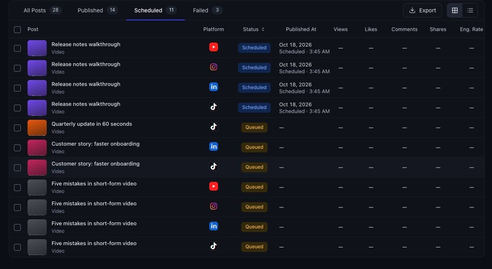

Case study · Developer & content tools
Multi-platform short-video publisher with dashboard
A local command-line tool and dashboard that publishes one vertical video to four social platforms, retrying only the platforms that failed.
At a glance
- Who it's for
- Solo creators who post the same short video to several networks.
- Core stack
- Python, OAuth 2.0 with PKCE, PostgreSQL or JSON files, pytest
- What sets it apart
- A local publisher that handles each network's upload quirks behind one command and one dashboard.
What it looks like in use
A dashboard that lists every video post, shows its status on each network, and tells you which one needs another try.
Posts
Sync analytics
AllQueuedScheduledPublishedPartialFailed
Desk tidy video
Three tips for a tidy desk
Queued Coffee video
A better morning coffee
Scheduled Plant video
Repotting a houseplant
Partial Walk video
A ten minute lunch walk
Published
Repotting a houseplant (Partial)
YouTubePublished
InstagramPublished
LinkedInPublished
TikTokFailed
What is in a post folder
One video fileVideo
A short note with the title, caption and platformspost.json
Posts are created by dropping a folder in the inbox and running the post command.
Run the post command again, only TikTok is retried
Real screens from the working product (sample data)

From one video to four networks
You drop a video in a folder
Each post is a folder with your video and a short note holding the title and caption.
The tool checks the post
It makes sure the video and note are in order before anything is sent.
It posts to each network
One command sends your video to YouTube, Instagram, LinkedIn and TikTok in turn.
You see what worked
The dashboard shows each network as published or failed, so nothing is a guess.
You run it again to fix a failure
Only the network that failed is tried again, and a finished post moves to the done folder.
The challenge
Publishing one short vertical video to several networks means logging into each platform, re-uploading, rewriting captions to fit each limit and tracking which uploads succeeded.
Each platform has its own authorization flow, upload protocol and quirks. One accepts only a public video URL, another lands uploads only in drafts, tokens expire on different schedules, and a personal profile on one network cannot be posted to through its API at all. A naive script fails on these constraints.
The solution
A Python command-line tool reads one folder per post (a video plus a metadata file), validates it, and publishes through a common adapter interface for each platform.
Results are stored per platform, so a re-run retries only the failures, and fully successful posts move to a done folder. A localhost dashboard shows queued, scheduled and published posts with per-platform state and analytics. A temporary tunnel exposes a single file when a platform needs a public link.
For your technical teamhow it works under the hood
One post, four platforms, results kept per platform
Key features
What the system does, as built in the codebase.
- 01
Folder-based post inbox
Each post is a video plus metadata, with per-platform caption overrides and platform selection.
- 02
Four platform adapters
Video, short-form and draft-inbox uploads behind one interface.
- 03
Dry-run mode
Validates tokens and inputs without uploading anything.
- 04
Retry only failures
Per-platform results are saved, so reruns skip successes.
- 05
One-time browser login
OAuth with PKCE and a one-shot localhost callback, then token refresh.
- 06
Temporary public file link
Serves one file under an unguessable path through a tunnel and tears it down after upload.
- 07
Local dashboard
Queue, scheduled, published and analytics views, available on localhost only.
- 08
Chunked resumable uploads
Upload planning for large videos.
How it fits together
From a folder with a video to four platforms, with results tracked per platform.
- Post inbox foldervideo and metadata
- CLI and validationdry-run, platform selection
- Platform adaptersfour networks, one interface
- Tunnel helpertemporary public file link
- Result storePostgres or JSON files
- Local dashboardqueue, status, analytics
- Adapters write per-platform results to the store.
- The dashboard reads the store and synced analytics.
Implementation notes
Engineering decisions worth knowing about.
One interface per platform
An abstract platform interface with login, check, publish and dry-run semantics keeps each network isolated.
Flexible storage
Postgres is used when a database URL is set, and JSON files otherwise, with a migration command.
Tunnel fallback
The tunnel helper falls back from a quick-tunnel service to an SSH reverse tunnel.
Local credentials
Tokens, environment files and posts are git-ignored and stored owner-only.
Broad test coverage
Tests cover each adapter, analytics per platform, the store, accounts, the tunnel and the UI.
Compliance choice
A platform whose terms forbid automation is handled through an approval-gated browser step rather than an API.
Command set
Subcommands cover login, status, post, inbox runs, sync, import of scheduled content and the UI.
Technology stack
Taken from the project's dependency and config files.
- Language
- Python
- HTTP
- requests
- urllib3
- Standard-library HTTP servers
- Data
- PostgreSQL via psycopg
- JSON file fallback
- Auth
- OAuth 2.0 with PKCE
- Networking
- Cloudflare quick tunnel
- SSH reverse tunnel
- Testing
- pytest
For your technical teamtechnology layers
Technology layers
Business value
What the system enables. No numbers are claimed.
- Removes re-uploading and most per-network caption work.
- Makes partial failures safe to retry without duplicate posts.
- Keeps credentials local and under the creator's control.
- Gives one view of what is queued, scheduled and live.
Need a system like this built?
Tell us what it needs to do and we will scope it with you on a call.